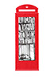

- 
- A mini-library
- A defibrillator
 A greenhouse
A greenhouse
 A smoking room
A smoking room
 A shower
A shower
- An artpiece by Banksy
 A piano
A piano
- A shelter for a dog
- A disco room
 A store
A store
- A fish tank
 A restroom
A restroom


Let us know your vision of the red phone box by drawing on the kiosk!
Send your drawing to yuchun.bian@gmail.com to be featured in the gallery.
A greenhouse
A smoking room
A shower
A piano
A store
A restroom
This website is a part of the project "Adopt a Kiosk" created by Yuchun Bian for her brief "Capture London" at Central Saint Martins. Fascinated by the past and present of the iconic British red phone boxes, she explores in this project how human creativity can help adapt old structures to our modern environment. The other two parts of the project are an illustration book and a photo collection.